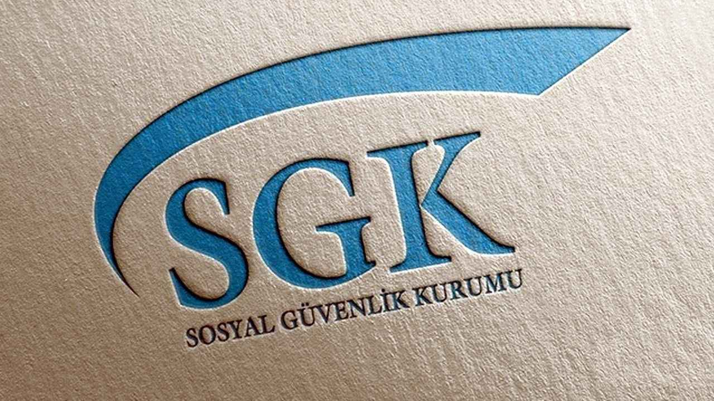

Aslan Teşvik Danışmanlık olarak, işletmelerin Sosyal Güvenlik Kurumu (SGK) tarafından sunulan teşviklerden maksimum düzeyde faydalanabilmesi için profesyonel danışmanlık hizmetleri sunuyoruz.
SGK teşvikleri, işverenlerin maliyetlerini düşürmek ve istihdamı artırmak amacıyla sunulan devlet destekleridir. Bu teşvikler, işletmelerin rekabet gücünü artırmak ve ekonomik büyümeyi
desteklemek için büyük bir fırsat sunar.

SGK Teşviklerinin Önemi
SGK teşvikleri, işverenler için birçok avantaj sağlar:
- Maliyet Tasarrufu: Teşvikler, işverenlerin sigorta prim maliyetlerini düşürerek finansal yüklerini hafifletir.
- İstihdam Artışı: Teşvikler, işverenlerin daha fazla personel istihdam etmesini teşvik eder.
- Rekabet Gücünün Artması: Maliyetlerin düşmesiyle işletmeler, fiyatlarını rekabetçi tutarak pazarda daha avantajlı hale gelirler.
- İşçi Memnuniyeti: Teşviklerle sağlanan avantajlar, çalışanların işyerlerine bağlılığını artırabilir.
SGK Teşvik Türleri
SGK tarafından sunulan çeşitli teşvik programları bulunmaktadır. Bunlardan bazıları:
- İlave İstihdam Teşviki: İşverenlere, yeni işe alınan çalışanlar için prim desteği sağlanır.
- Ar-Ge ve Tasarım Teşvikleri: Ar-Ge ve tasarım faaliyetlerinde bulunan işletmelere prim indirimi yapılır.
- Genç Girişimci Teşviki: İlk defa iş kuran genç girişimcilere, SGK prim desteği sunulur.
- Kadın ve Engelli İstihdam Teşviki: Kadın ve engelli çalışanların istihdamını artırmak için çeşitli prim indirimleri ve teşvikler sağlanır.
Danışmanlık Hizmetlerimiz
Aslan Teşvik Danışmanlık olarak, SGK teşviklerinden yararlanmak isteyen işletmelere kapsamlı danışmanlık hizmetleri sunuyoruz. Hizmetlerimiz şunları içerir:
- Teşvik Analizi:İşletmenizin mevcut durumunu analiz ederek hangi teşviklerinden yararlanabileceğinizi belirliyoruz.
- Başvuru Süreci:Teşvik başvurularının doğru ve eksiksiz bir şekilde yapılması için gerekli tüm işlemleri yürütüyoruz.
- Takip ve Raporlama:Teşviklerin işletmenize sağladığı avantajları düzenli olarak raporluyor ve gerekli takipleri yapıyoruz.
- Eğitim ve Bilgilendirme:İşverenleri ve çalışanları teşvikler konusunda bilgilendiriyor ve gerekli eğitimleri sağlıyoruz.
Neden Aslan Teşvik Danışmanlık?
SGK teşviklerinden tam anlamıyla faydalanabilmek için profesyonel bir destek almak önemlidir. Aslan Teşvik Danışmanlık olarak, uzman ekibimizle işletmenizin ihtiyaçlarına
özel çözümler sunuyoruz. Teşvik süreçlerindeki karmaşıklığı sizin için basitleştiriyor ve en uygun teşviklerden faydalanmanızı sağlıyoruz.